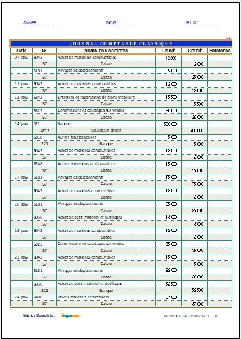

Vue d’ensemble de la page RECTO
Cette capture illustre une vue d’ensemble de la page RECTO du journal comptable. Elle permet de visualiser la structure complète d’une page type dans IMPUMAT et facilite la compréhension de l’organisation des écritures.
Télécharger la version française IMPUMAT